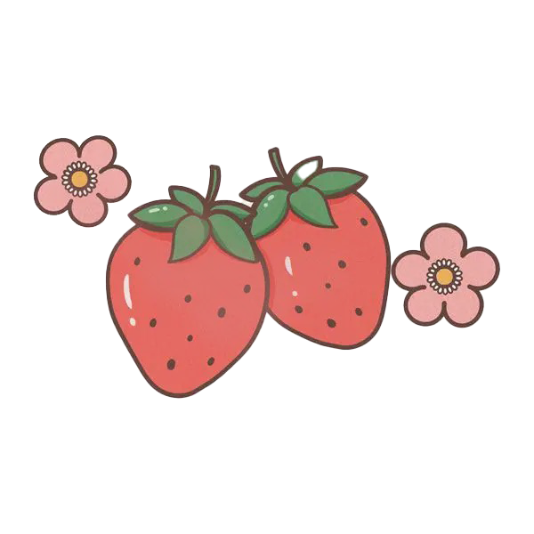

A light and fluffy Japanese-style sponge cake, filled with fresh strawberries and whipped cream. A true classic in Japanese pastry.
*The recipe comes from Tokyo Confectionery School: Basic Western Sweets (東京製菓学校 基礎洋菓子). Since an official English translation of the book is not available, a similar recipe can be found on Allrecipes here. While the methods and ingredients may vary slightly, both sources serve as valuable guides to creating a light and fluffy strawberry shortcake at home.
Total Preparation Time: ~1 hour 30 minutes
Serving Size: 4–6 servings......A 15cm (6-inch) round cake is perfect for 4 to 6 people.
Cut a round piece of parchment paper to fit the bottom of a 15cm round cake mold. Also, cut a 50cm long strip of parchment paper to line the sides of the mold.
Crack the eggs into a mixing bowl and beat them while gradually adding the granulated sugar.
Place the bowl over a pot of hot water (double boiler) and continue whisking until the mixture reaches around 40°C. Then, remove from heat and continue whisking at high speed.
Sift the cake flour into the mixture in small batches, gently folding it in each time to avoid deflating the batter.
Tip: When adding flour, fold it in from the center rather than directly onto the surface. This prevents clumps and ensures even distribution.
Use a spatula to gently fold the flour in, making sure not to deflate the batter.
Once the flour is fully incorporated, slowly drizzle in the pre-melted butter (at 40°C) while folding gently.
Important Note: Melted butter should be added gradually to prevent it from sinking to the bottom.
Continue folding gently to fully incorporate the butter without deflating the batter.
Pour the batter into the prepared cake mold, starting from the center and allowing it to spread evenly.
Preheat the oven to 170°C and bake the cake for approximately 35 minutes. After baking, drop the cake from a height of 10cm onto a flat surface to release trapped steam.
Tip: Dropping the cake immediately after baking prevents it from shrinking as it cools.
Once cooled, remove the cake from the mold and use a cake slicer or serrated knife to cut the cake into three equal layers.
Tip: Using a cake leveler makes it easier to achieve even layers.
In a small saucepan, combine granulated sugar and water, then bring to a boil. Once cooled, mix in the strawberry liqueur.
Using a pastry brush, evenly apply the syrup to the surface of each sponge cake layer.
Spread a layer of Chantilly cream (whipped cream with sugar) onto the bottom cake layer. Cut strawberries in half and place them evenly on top.
Tip: Using a palette knife helps spread the cream smoothly.
Place the second cake layer on top and repeat the process—spread whipped cream and arrange strawberries.
Spread a smooth layer of whipped cream over the sides and top of the cake. Pipe decorative cream swirls around the edges and decorate with fresh strawberries, blueberries, or chocolate as desired.
Tip: If you plan to pipe additional decorations, let the cake chill in the fridge for a while first to help the cream set properly.
Whole Egg Method: This recipe follows the whole egg method (whipping whole eggs instead of separating yolks and whites), resulting in a soft and elastic sponge cake.
Non-Alcoholic Option: The strawberry liqueur syrup enhances the flavor, but you may substitute it with fruit juice for a non-alcoholic version.
Gentle Folding: Be gentle when folding in ingredients to avoid deflating the batter, which helps achieve a fluffy texture.
© 2025 Sophia Yang. All rights reserved.